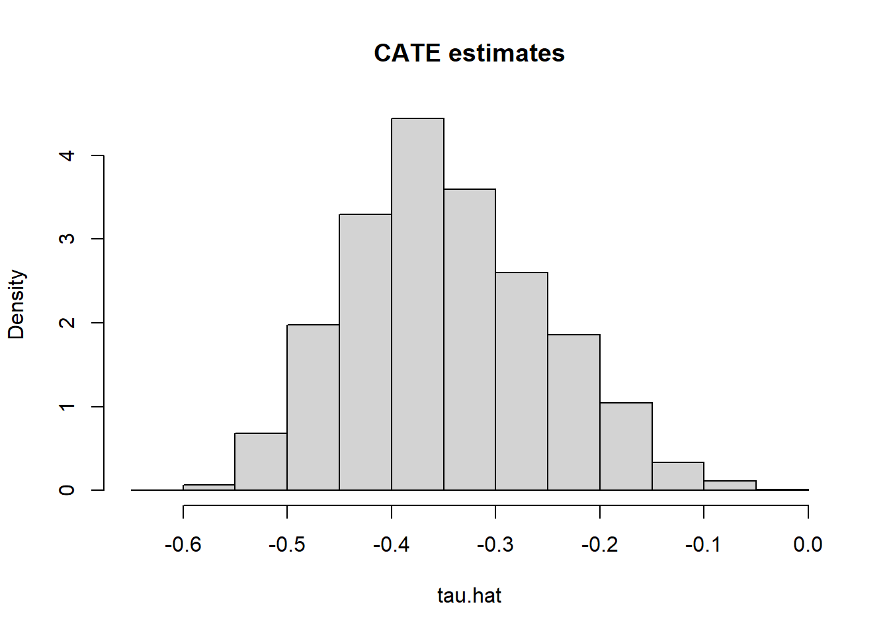
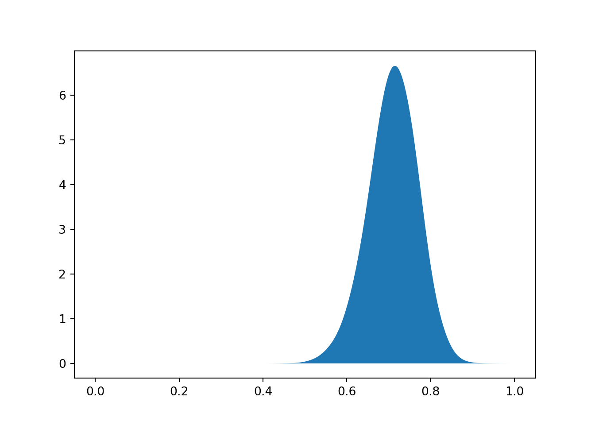
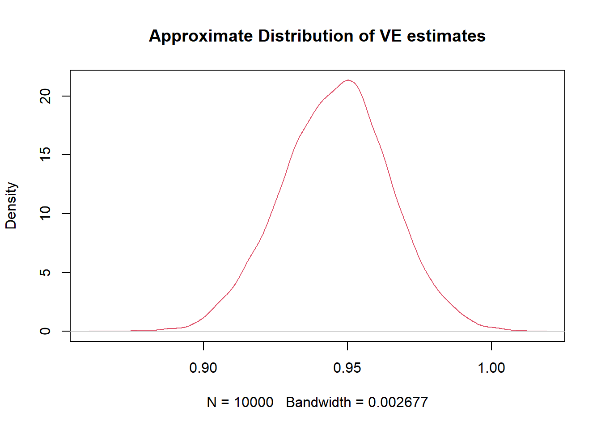
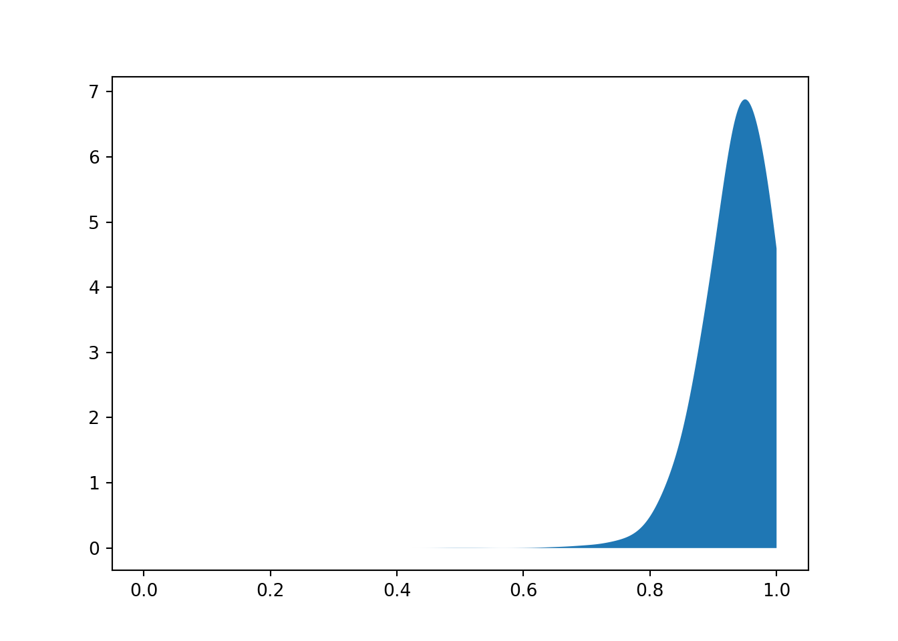
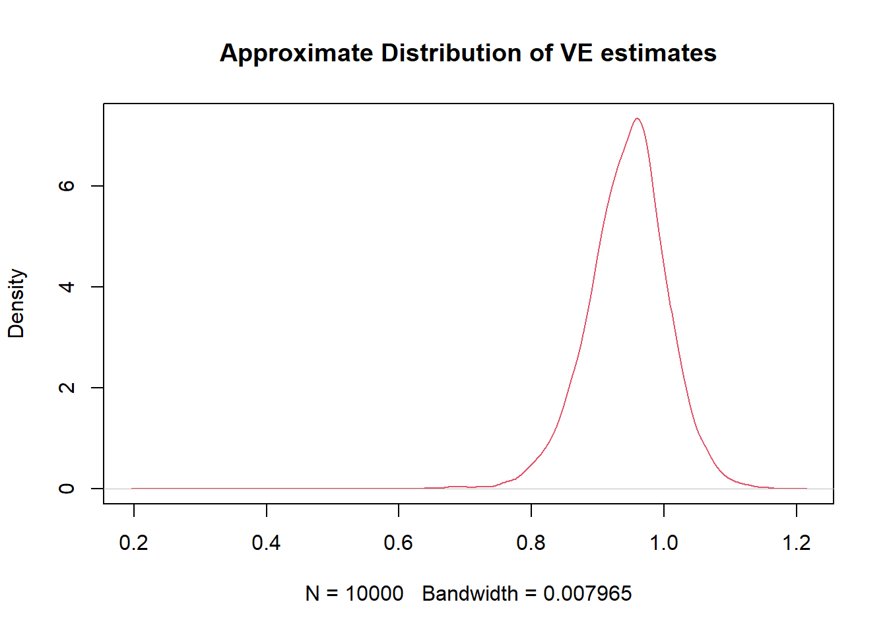
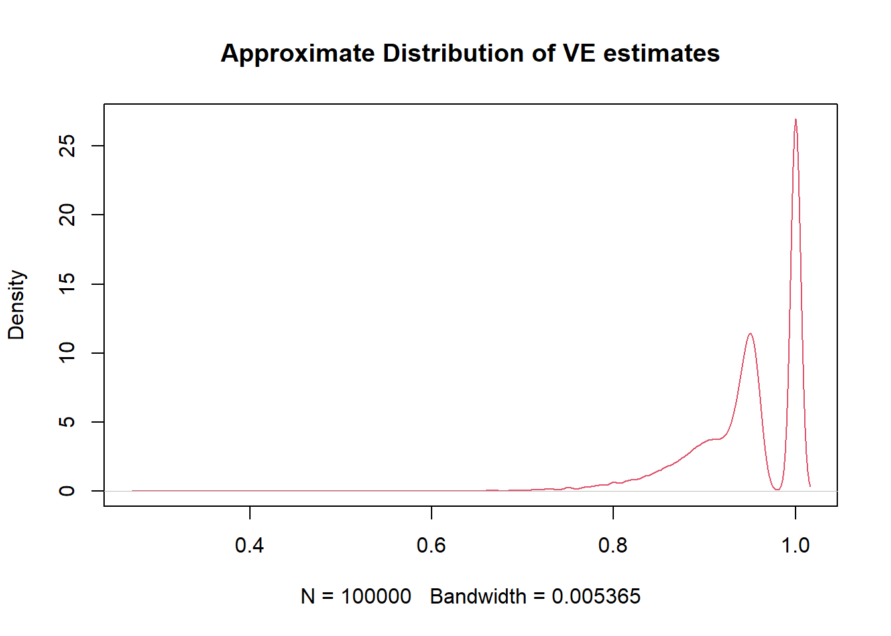
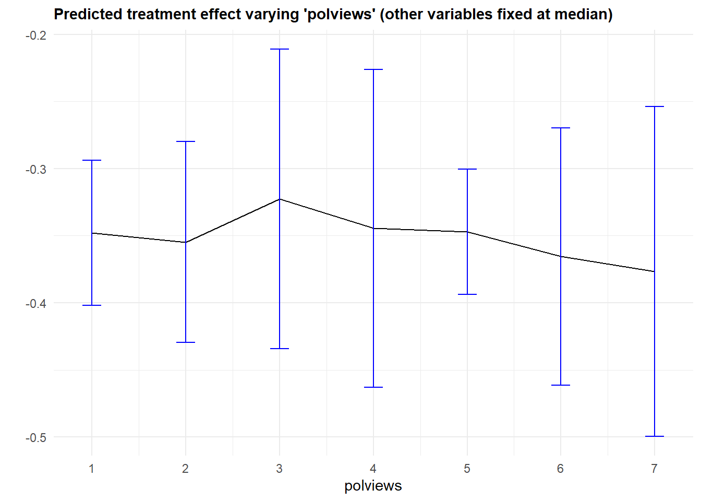

Chapter 4 Vaccine RCT Examples
Victor Chernozhukov. This notebook contains some RCT examples that I will be using for teaching.
4.1 Polio RCT
One of the earliest randomized experiments were the Polio vaccination trias conducted by the Public Health Service in 1954. The question was whether Salk vaccine prevented polio. Children in the study were randomly assigned either a treatment (polio vaccine shot) or a placebo (saline solution shot), without knowing which one they received. The doctors in the study, making the diagnosis, did not know whether a child received a vaccine or not. In other words, the trial was a double-blind, randomized control trial. The trial had to be large, because the rate at which Polio occured in the population was 50 per 100,000. The treatment group saw 33 polio cases per 200,745; the control group saw 115 cases per 201,229. The estimated avearage treatment effect is about
\[40\]
with the 95% confidence band (based on approximate normality of the two sample means and their differences):
\[[-52,-28]\]
As this is an RCT, the confidence band suggests that the Polio vaccine caused the reduction in the risk of polio.
The interesting thing here is that we don’t need the underlying individual data to evaluate the effectivess of the vaccine. This is because the outcomes are Bernoulli random variables, and we have enough information to compute the estimate of ATE as well as the confidence intervals from the group case counts.
We also compute the Vaccine Efficacy metric, which refers to the following measure according to the CDC:
\[VE = \frac{Risk for Unvaccinated - Risk for Vaccinated}{Risk for Unvaccinated} \]
It describes the relative reduction in risk caused by vaccination.
It is staighforward to get the VE estimate by just plugging-in the numbers, but how do we get the approximate variance estimate? I am too lazy to do calculations for the delta method, so I will just use a simulation (a form of approximate bootstrap) to obtain the confidence intervals.
R code
# No libraries needed.
Python code
import numpy as np # linear algebra
import pandas as pd # data processing, CSV file I/O (e.g. pd.read_csv)R code
NV = 200745 # number of vaccinated (treated)
NU = 201229 # number of unvaccinated (control)
RV= 33/NV # average outcome for vaccinated
RU =115/NU # average outcome for unvaccinated
VE = (RU - RV)/RU; # vaccine efficacy
# incidence per 100000
Incidence.RV=RV*100000
Incidence.RU=RU*100000
Python code
NT = 200745 #number of treated
NC = 201229 #number of controlled
YT = 33/NT #average outcome for treated
YC =115/NC #average outcome for controlledR code
print(paste("Incidence per 100000 among treated:", round(Incidence.RV,4)))## [1] "Incidence per 100000 among treated: 16.4388"print(paste("Incidence per 100000 among controlled:", round(Incidence.RU,4)))## [1] "Incidence per 100000 among controlled: 57.1488"
Python code
print("Incidence per 100000 among treated:" + str(YT*100000))## Incidence per 100000 among treated:16.438765598146905print( "Incidence per 100000 among controlled:"+ str(YC*100000))## Incidence per 100000 among controlled:57.14882049803955R code
# treatment effect - estimated reduction in incidence per 100000 people
delta.hat = 100000*(RV-RU)
# variance, standard deviation and confidence interval of ATE using that outcomes are Bernoulli
Var.RV = RV*(1-RV)/NV
Var.RU = RU*(1-RU)/NU
Var.delta.hat = 100000^2*(Var.RV + Var.RU)
Std.delta.hat = sqrt(Var.delta.hat)
print(paste("Standard deviation for ATE is", round(Std.delta.hat,4)))## [1] "Standard deviation for ATE is 6.0474"
Python code
# treatment effect estimate reduction in incidence per 100000 people
delta_hat = 100000*(YT-YC)
print("Estimate TE of occurances per 100,000 " + str(100000*(YT-YC)))## Estimate TE of occurances per 100,000 -40.71005489989265Var_delta_hat = (100000**2)*(YT*(1-YT)/NT + YC*(1-YC)/NC)
print("Standard deviation for ATE"+ str(Var_delta_hat**.5))## Standard deviation for ATE6.047412320702958R code
CI.delta = c(delta.hat -1.96*sqrt(Var.delta.hat),
delta.hat +1.96*sqrt(Var.delta.hat))
print(paste("95% confidence interval of ATE is [", round(CI.delta[1],4), ",",
round(CI.delta[2],4), "]" ))## [1] "95% confidence interval of ATE is [ -52.563 , -28.8571 ]"
Python code
CI_delta = [delta_hat -1.96*Var_delta_hat**.5, delta_hat +1.96*Var_delta_hat**.5]
print("95 % confidence interval is [" + str(CI_delta[0]) + ","+
str(CI_delta[1]) + "]" )## 95 % confidence interval is [-52.56298304847044,-28.85712675131485]R code
# we use an approximate bootstrap to find the confidence interval of vaccine efficacy
# via Monte Carlo draws
set.seed(1)
B = 10000 # number of bootstraps
RVs = RV + rnorm(B)*sqrt(Var.RV)
RUs = RU + rnorm(B)*sqrt(Var.RU)
VEs= (RUs - RVs)/RUs
print(paste("Overall VE is", round(VE,4) ))## [1] "Overall VE is 0.7124"
Python code
# Here we calculate the overall effectiveness of the vaccine and construct confidence intervals for it
NV = 200745;
NU = 201229;
RV = 33/NV;
RU = 115/NU;
VE = (RU - RV)/RU;
print("Overall VE is "+ str(VE) )
# this recovers the number in the table. we set up a simulation example.
# calulate variance of risk estimates:## Overall VE is 0.7123516206478694Var_RV = RV*(1-RV)/NV
Var_RU = RU*(1-RU)/NUR code
# we use an approximate bootstrap to find the confidence interval of vaccine efficacy
# via Monte Carlo draws
set.seed(1)
B = 10000 # number of bootstraps
RVs = RV + rnorm(B)*sqrt(Var.RV)
RUs = RU + rnorm(B)*sqrt(Var.RU)
VEs= (RUs - RVs)/RUs
# use the empirical quantiles from the bootstraps
CI.VE = quantile(VEs, c(.025, .975))
print(paste("95% confidence interval of VE is [", round(CI.VE[1],4), ",",
round(CI.VE[2],4), "]"))## [1] "95% confidence interval of VE is [ 0.5903 , 0.8176 ]"
Python code
# set-up MC draws:
B = 10000
RVs = RV + np.random.normal(0, 1, B)*(Var_RV)**.5
RUs = RU + np.random.normal(0, 1, B)*(Var_RU)**.5
VEs= (RUs - RVs)/RUs
CI_VE_L = np.quantile(VEs, .025)
CI_VE_U = np.quantile(VEs, .975)
print("95 % confidence interval is [" + str(CI_VE_L), ",", str(CI_VE_U), "]" )## 95 % confidence interval is [0.5896940533482303 , 0.8168250906712885 ]R code
plot(density(VEs), col=2, main="Approximate Distribution of VE estimates")
Python code
from sklearn.neighbors import KernelDensity
import matplotlib
import matplotlib.pyplot as plt
from scipy.stats import norm
from sklearn.neighbors import KernelDensity
from sklearn.utils.fixes import parse_version
# instantiate and fit the KDE model
X= VEs[:, np.newaxis]
X_plot = np.linspace(0, 1, 1000)[:, np.newaxis]
kde = KernelDensity(kernel='gaussian', bandwidth=0.02).fit(X)
log_dens = kde.score_samples(X_plot)
plt.fill_between(X_plot[:, 0], np.exp(log_dens))
4.2 Pfizer/BNTX Covid-19 RCT
Here is a link to the FDA briefing and an interesting discussion, as well as data.
Pfizer/BNTX was the first vaccine approved for emergency use to reduce the risk of Covid-19 decease. In studies to assess vaccine efficacy, volunteers were randomly assigned to receive either a treatment (2-dose vaccination) or a placebo, without knowing which they recieved. The doctors making the diagnoses did not know now whether a given volunteer received a vaccination or not. The results of the study are given in the following table:

Here we see both the overall effects and the effects by age group. The confidence intervals for the averal ATE are tight and suggest high effectiveness of the vaccine. The confidence intervals for the age group \(65-75\) are much wider. We could group \(65-75\) and \(>75\) groups to evaluate the effectiveness of the vaccine and also narrow down the width of the confidence band.
In this case, the reported results are for vaccine effectiveness. We use the same approach as above.
In the code cell below we calculate the overall effectiveness of the vaccie and construct confidence intervals for it.
R code
NV = 19965; # number vaccinated
NU = 20172; # number unvaccinated
RV = 9/NV; # average outcome for vaccinated
RU = 169/NU; # average outcome for unvaccinated
VE = (RU - RV)/RU; # vaccine efficacy
# treatment effect - estimated reduction in incidence per 100000 people
delta.hat = 100000*(RV-RU)
print(paste("Overall VE is", round(VE,4) ))## [1] "Overall VE is 0.9462"Var.RV = RV*(1-RV)/NV
Var.RU = RU*(1-RU)/NU
Var.delta.hat = 100000^2*(Var.RV + Var.RU)
Std.delta.hat = sqrt(Var.delta.hat)
Python code
NV = 19965;
NU = 20172;
RV = 9/NV;
RU = 169/NU;
VE = (RU - RV)/RU;
print("Overall VE is "+ str(VE))
# this recovers the number in the table.
# we set up a simulation example.
# calulate variance of risk estimates:## Overall VE is 0.9461934124362605Var_RV = RV*(1-RV)/NV
Var_RU = RU*(1-RU)/NUR code
# we use an approximate bootstrap to find the VE confidence interval
# using Monte Carlo draws as before
set.seed(1)
B = 10000
RVs = RV + rnorm(B)*sqrt(Var.RV)
RUs = RU + rnorm(B)*sqrt(Var.RU)
VEs= (RUs - RVs)/RUs
CI.VE = quantile(VEs, c(.025, .975))
print(paste("95% confidence interval of VE is [", round(CI.VE[1],4), ",",
round(CI.VE[2],4), "]" ))## [1] "95% confidence interval of VE is [ 0.9086 , 0.9824 ]"
Python code
# set-up MC draws:
B = 10000
RVs = RV + np.random.normal(0, 1, B)*(Var_RV)**.5
RUs = RU + np.random.normal(0, 1, B)*(Var_RU)**.5
VEs= (RUs - RVs)/RUs
CI_VE_L = np.quantile(VEs, .025)
CI_VE_U = np.quantile(VEs, .975)
print("95 % confidence interval is [" + str(CI_VE_L), ",",
str(CI_VE_U), "]" )## 95 % confidence interval is [0.9083100367463102 , 0.9819990219842897 ]R code
plot(density(VEs), col=2, main="Approximate Distribution of VE estimates")
Python code
# instantiate and fit the KDE model
X= VEs[:, np.newaxis]
X_plot = np.linspace(0, 1, 1000)[:, np.newaxis]
kde = KernelDensity(kernel='gaussian', bandwidth=0.02).fit(X)
log_dens = kde.score_samples(X_plot)
plt.fill_between(X_plot[:, 0], np.exp(log_dens))
In the code cell below we calculate the effectiveness of the vaccine for the two groups that are 65 or older:
R code
# Here we calculate the overall effectiveness of the vaccine for the two groups that are 65 or older
NV = 3239+805
NU = 3255+812
RV = 1/NV
RU = (14+5)/NU
VE = (RU - RV)/RU
print(paste("Overall VE is", round(VE,4)) )## [1] "Overall VE is 0.9471"Var.RV = RV*(1-RV)/NV
Var.RU = RU*(1-RU)/NU
# As before, we use an approximate bootstrap to find the confidence intervals
# using Monte Carlo draws
set.seed(1)
B = 10000
RVs = RV + rnorm(B)*sqrt(Var.RV)+ 10^(-10)
RUs = RU + rnorm(B)*sqrt(Var.RU)+ 10^(-10)
VEs= (RUs - RVs)/RUs
CI.VE = quantile(VEs, c(.025, .975))
print(paste("two-sided 95 % confidence interval is [", CI.VE[1], ",",
CI.VE[2], "]" ))## [1] "two-sided 95 % confidence interval is [ 0.816044705723917 , 1.0579357468458 ]"OneSidedCI.VE = quantile(VEs, c(.05))
print(paste("one-sided 95 % confidence interval is [", OneSidedCI.VE[1], ",",
1, "]" ))## [1] "one-sided 95 % confidence interval is [ 0.841513343789695 , 1 ]"plot(density(VEs), col=2, main="Approximate Distribution of VE estimates")
Python code
# Here we calculate the overall effectiveness of the vaccine for the two groups that are 65 or older
NV = 3239+805
NU = 3255+812
RV = 1/NV
RU = (14+5)/NU
VE = (RU - RV)/RU
print("Overall VE is "+ str(VE))
# this recovers the number in the table.
# we set up a simulation example.
# calulate variance of risk estimates:## Overall VE is 0.9470690822010516Var_RV = RV*(1-RV)/NV
Var_RU = RU*(1-RU)/NU
# set-up MC draws:
B = 10000
RVs = RV + np.random.normal(0, 1, B)*(Var_RV)**.5
RUs = RU + np.random.normal(0, 1, B)*(Var_RU)**.5
VEs= (RUs - RVs)/RUs
CI_VE_L = np.quantile(VEs, .025)
CI_VE_U = np.quantile(VEs, .975)
print("95 % confidence interval is [" + str(CI_VE_L), ",",
str(CI_VE_U), "]" )## 95 % confidence interval is [0.8102149267318752 , 1.0554370238531643 ]CI_VE_L = np.quantile(VEs, .05)
print("95 % confidence interval is [" + str(CI_VE_L), ",",
str(1), "]" )
# instantiate and fit the KDE model## 95 % confidence interval is [0.8396672267199538 , 1 ]X= VEs[:, np.newaxis]
X_plot = np.linspace(0, 1, 1000)[:, np.newaxis]
kde = KernelDensity(kernel='gaussian', bandwidth=0.02).fit(X)
log_dens = kde.score_samples(X_plot)
plt.fill_between(X_plot[:, 0], np.exp(log_dens))
R code
NV = 3239+805
NU = 3255+812
RV = 1/NV
RU = (14+5)/NU
VE = (RU - RV)/RU
print(paste("Overall VE is", VE) )## [1] "Overall VE is 0.947069082201052"set.seed(1)
B = 10000 #number of simulation draw
RVs = rbinom(100000, size= NV, prob = RV)
RUs = rbinom(100000, size= NU, prob = RU)
VEs= (RUs - RVs)/RUs
CI.VE = quantile(VEs, c(.025, .975))
print(paste("two-sided 95 % confidence interval is [", CI.VE[1], ",",
CI.VE[2], "]" ))## [1] "two-sided 95 % confidence interval is [ 0.8 , 1 ]"OneSidedCI.VE = quantile(VEs, c(.05))
print(paste("one-sided 95 % confidence interval is [", OneSidedCI.VE[1], ",", 1, "]" ))## [1] "one-sided 95 % confidence interval is [ 0.833333333333333 , 1 ]"plot(density(VEs), col=2, main="Approximate Distribution of VE estimates")
Python code
NV = 3239+805;
NU = 3255+812;
RV = 1/NV;
RU = (14+5)/NU;
VE = (RU - RV)/RU;
print("Overall VE is "+ str(VE))## Overall VE is 0.9470690822010516B = 10000 #number of simulation draw
#numpy.random.binomial(n, p, size=None)
RVs = np.random.binomial(NV, RV, B)
RUs = np.random.binomial(NU, RU, B)
VEs= (RUs - RVs)/RUs
CI_VE_L = np.quantile(VEs, .025)
CI_VE_U = np.quantile(VEs, .975)
print("95 % confidence interval is [" + str(CI_VE_L), ",",
str(CI_VE_U), "]" )## 95 % confidence interval is [0.8 , 1.0 ]CI_VE_L = np.quantile(VEs, .05)
print("95 % confidence interval is [" + str(CI_VE_L), ",",
str(1), "]" )
# instantiate and fit the KDE model## 95 % confidence interval is [0.8333333333333334 , 1 ]X= VEs[:, np.newaxis]
X_plot = np.linspace(0, 1.1, 1000)[:, np.newaxis]
kde = KernelDensity(kernel='gaussian', bandwidth=0.02).fit(X)
log_dens = kde.score_samples(X_plot)
plt.fill_between(X_plot[:, 0], np.exp(log_dens))